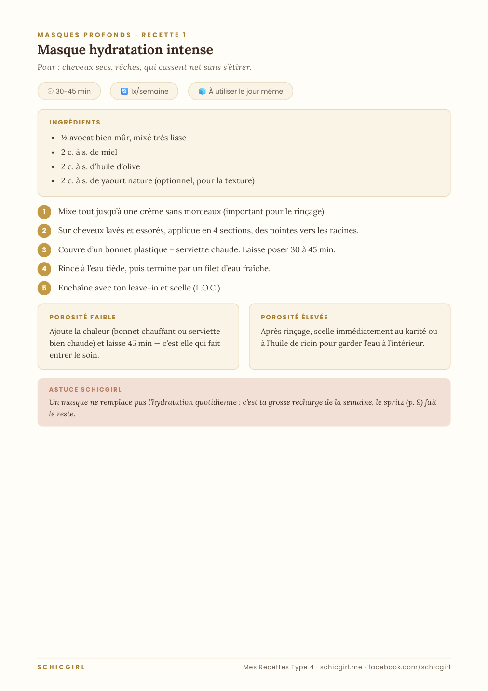
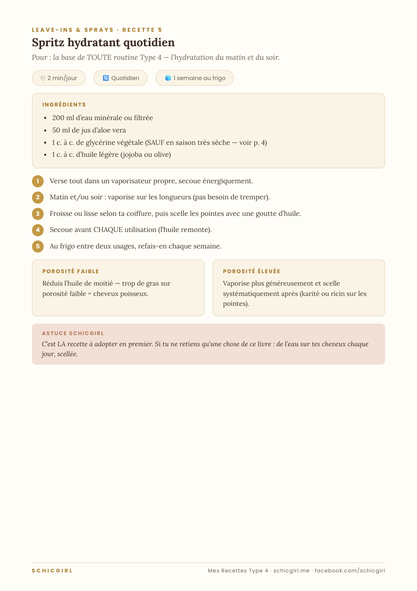

Nouveau · 17 recettes
Nouveau · 17 recettes
Des soins qui marchent, déjà dans ta cuisine
17 recettes maison pour cheveux Type 4 — karité, miel, aloe, avocat. Avec les quantités exactes, les adaptations porosité, et zéro promesse miracle.
Le fait-maison, fait correctement
Le DIY improvisé abîme autant qu’il aide. Ici chaque recette est dosée, expliquée et adaptée à ta porosité.
Des doses, pas des « à peu près »
Chaque recette donne les quantités exactes. Trop de karité étouffe, trop de coco rigidifie — les doses comptent.
12 ingrédients, zéro gaspillage
Tout le livre repose sur une petite liste trouvable au marché. Tu achètes une fois, tu fais tout.
Adapté à TA porosité
Deux encadrés sur chaque recette : quoi changer si tes cheveux repoussent l’eau, ou s’ils la boivent et la perdent.
Cinq familles de soins
Masques profonds, leave-ins & sprays, pré-poos & huiles, nettoyants doux, soins force & rétention — tu couvres toute ta routine.
Les 6 règles d’or du DIY
Hygiène, conservation, patch-test : un soin maison n’a aucun conservateur. On te dit ce qui se garde et combien de temps.
L’antisèche « quel soin quand »
Une fiche pour savoir quoi préparer selon la saison, le climat et l’état de tes cheveux.
Un aperçu de tes recettes


Vraies pages du livre · 17 recettes dosées, adaptées à ta porosité
- Les 6 règles d'or du DIY (hygiène, conservation, patch test)
- Ton garde-manger capillaire : 12 ingrédients et leur vrai rôle
- Adapter chaque recette à ta porosité (faible ou élevée)
- La vérité honnête sur la glycérine, l'eau de riz et l'huile de ricin
- Transformer tes essais en recettes personnelles qui marchent
- 4 masques profonds — hydratation intense, force & douceur, réparateur karité, brillance
- 3 leave-ins & sprays — LE spritz quotidien, lait capillaire, refresh 2e jour
- 3 pré-poos & huiles — pré-poo démêlant, bain d'huile, huile cuir chevelu
- 2 nettoyants doux — rhassoul et co-wash enrichi
- Tes outils — la recette-carnet à remplir + l'antisèche « quel soin quand » à coller dans la salle de bain
Pour toute femme aux cheveux crépus (4A, 4B, 4C) qui veut des soins efficaces sans se ruiner en produits — et sans risquer d'abîmer ses cheveux avec des mélanges improvisés.
C’est pour toi si…
- Tu testes des mélanges vus en ligne, sans savoir les doses
- Tu veux soigner tes cheveux sans racheter des produits
- Tu as déjà karité, huiles ou miel dans ta cuisine
- Tu veux comprendre ce que chaque ingrédient fait
- You try mixes you saw online without knowing the amounts
- You want to care for your hair without buying more products
- You already have shea, oils or honey in your kitchen
- You want to understand what each ingredient does
Ce n’est pas pour toi si…
- Tu ne veux rien préparer toi-même
- Tu cherches une routine complète (prends plutôt Créer ma routine)
- Tu veux des produits tout prêts à acheter
- You don't want to make anything yourself
- You want a full routine (take Build My Routine instead)
- You want ready-made products to buy
Ce qu’elles en disent
« Cette routine a transformé mes boucles ! Enfin des cheveux doux. »
« Des explications claires, et en français ! Enfin quelqu’un qui comprend nos cheveux. »
Retours de femmes que j’ai accompagnées avec cette méthode, avant la publication du guide. Partagés avec leur accord — prénom abrégé et sans photo à leur demande.
2 bonus offerts avec ton livre
Le Calendrier Routine du Mois — à imprimer
La Fiche Jour de Lavage — note ce qui marche
Les deux bonus se téléchargent depuis la dernière page de ton livre.

Éduquer, pas vendre du rêve
Schicgirl est dédiée à l’éducation des cheveux naturels, avec une spécialité : le Type 4. La mission est simple — aider les femmes à comprendre leurs cheveux pour obtenir des résultats qui durent, au lieu de courir après le produit miracle.
- Accès immédiat dès le paiement
- Téléchargement instantané du PDF
- Paiement 100% sécurisé sur Selar
- Accès à vie — c’est à toi pour toujours
Une question avant d'acheter ? Écris-moi sur Facebook 💛
Produit numérique à téléchargement immédiat. En finalisant ton achat, tu demandes la livraison immédiate et tu renonces à ton droit de rétractation de 14 jours : aucun remboursement une fois le fichier téléchargé. Un doute ? Pose-moi tes questions AVANT d’acheter, je réponds vraiment.
- Je reçois quoi ?
- Un PDF de 26 pages, téléchargeable immédiatement, à garder à vie — une recette complète par page.
- Les ingrédients sont faciles à trouver ?
- Oui : karité, huiles, miel, avocat, aloe, rhassoul… tout se trouve au marché, en grande surface ou en boutique bio, à petit prix.
- C'est pour quel type de cheveux ?
- Cheveux crépus Type 4 — 4A, 4B, 4C. Chaque recette a une adaptation porosité faible ET porosité élevée.
- Comment je paie ?
- Paiement sécurisé sur Selar (carte, mobile money selon ton pays).